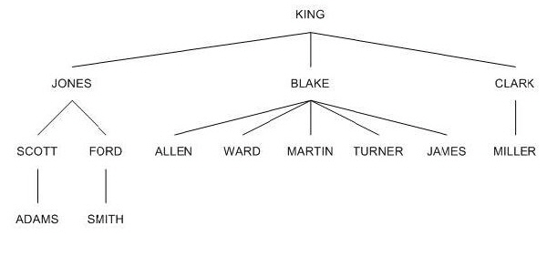

DML과 DDL(Data Definition Language)
Data Definition Language
개요
DML : Data Manipulation Language ; 데이터 검색, 수정 등
INSERT : 데이터베이스 객체에 데이터를 입력
DELETE : 데이터베이스 객체에 데이터를 삭제
UPDATE : 기존에 존재하는 데이터베이스 객체 안의 데이터수정
SELECT : 데이터베이스 객체로부터 데이터를 검색
DDL : Data Definition Language ; 데이터와 그 구조를 정의
CREATE : 데이터 베이스 객체 생성
DROP : 데이터 베이스 객체를 삭제
ALTER : 기존에 존재하는 데이터베이스 객체를 다시 정의
DCL : Data Control Language ; 데이터베이스 사용자의 권한 제어
GRANT : 데이터 베이스 객체에 권한 부여
REVOKE : 이미 부여된 데이터베이스 객체의 권한을 취소
2. CREATE TABLE로 테이블 구조 정의하기
(1) 지금까지는 오라클에서 학습용으로 제공해 주는 테이블을 사용하여 다양한 조회를 해 보았습니다.
이번 장에서는 DDL(Data Definition Language)을 사용하여
테이블 구조 자체를 새롭게 생성, 수정, 삭제해 보겠습니다.
우선 CREATE TABLE 명령어로 새로운 테이블을 생성해 보겠습니다.
다음은 CREATE TABLE 문의 기본 형식입니다.
CREATE TABLE table_name
(column_name data_type expr, …)
ex. 다음과 같은 속성을 가진 Book 테이블을 생성하시오, 정수형은 NUMBER를, 문자형은 VARCHAR2를 사용한다.
bookid(도서번호) – NUMBER (기본키 지정)
bookname(도서이름) – VARCHAR2(20)
publisher(출판사) – VARCHAR2(20)
price(가격) - NUMBER
CREATE TABLE Book(
bokid NUMBER,
bookname VARCHAR2(20),
publisher VARCHAR2(20),
price NUMBER,
PRIMARY KEY(bookid));
drop table book;
CREATE TABLE BOOK(
bookid number primary key,
bookname varchar2(20),
publisher varchar2(20),
price number);
(2) 데이터형 : 데이터베이스에는 문자, 숫자, 날짜, 이미지 등과 같은 다양한 형태의 데이터가 저장됩니다.
다음은 오라클에서 제공되는 데이터 형의 종류입니다.
CHAR(size) : 고정 길이 문자 데이터. VARCHAR2와 동일한 형태의 자료를 저장할 수 있고,
입력된 자료의 길이와는 상관없이 정해진 길이만큼 저장 영역 차지. 최소 크기는 1
VARCHAR2(size) : Up to 2000 Bytes 가변 길이 문자 데이터. 실제 입력된 문자열의 길이만큼 저장 영역을 차지.
최대 크기는 명시해야 하며, 최소 크기는 1
NUMBER : Internal Number Format 최고 40자리까지의 숫자를 저장할 수 있습니다.
이때 소수점이나 부호는 길이에 포함되지 않는다.
NUMBER(w) : W자리까지의 수치로 최대 38자리까지 가능하다. (38자리가 유효 숫자이다.)
NUMBER(w, d) ; W는 전체 길이, d는 소수점 이하 자릿수이다. 소수점은 자릿수에 포함되지 않는다.
DATE : BC 4712년 1월 1일~AD 4712년 12월 31일까지의 날짜.
LONG : 가변 길이의 문자형 데이터 타입, 최대 크기는 2GB.
LOB : 2GB까지의 가변 길이 바이너리 데이터를 저장시킬 수 있습니다. 이미지 문서, 실행 파일을 저장할 수 있습니다.
LOB(Large OBject) 데이터 형은 텍스트, 그래픽 이미지, 동영상, 사운드와 같이 구조화되니 않은 대용량의
텍스트나 멀디미디어 데이터를 저장하기 위한 데이터 형입니다.
최대 4GB 까지 저장가능합니다. 오라클에서 제공되는
LOB 데이터 형은 BLOB, CLOB, NCLOB, BFILE 등이 있습니다.
BLOB는 그래픽 이미지, 동영상, 사운드와 같은 구조화되지 않은 데이터를 저장하기 위해 사용됩니다.
CLOB는 e-BOOK과 같은 대용량의 텍스트 데이터를 저장하기 위해서 사용합니다 ***(게시판 본문등에 자주사용되는 자료형)***
NCLOB은 국가별 문자셋 데이터를 저장하고, BFILE은 바이너리 데이터를 파일 형태로 저장합니다
TIMESTAMP(n) ; DATE형의 확장된 형태. 백만분의 일초 단위까지 표현할 수 있다.
(3) 식별자 명명규칙
반드시 문자로 시작. A~Z까지 대소문자, 0~9까지의 숫자, 특수기호는 _, $, # 만 포함 가능
1~30글자까지 가능. 공백 허용 안함.
오라클에서 사용되는 예약어나 다른 객체명과 중복 불가
(4) 실습하기 I
지금까지 실습에 사용했던 사원 테이블과 유사한 구조의 사원번호, 사원이름, 급여 3개의 칼럼으로
구성된 EMP01 테이블을 생성해 보자
CREATE TABLE EMP01(
EMPNO NUMBER(4),
ENAME VARCHAR2(20),
SAL NUMBER(7, 2)
);
DEPTNO(NUMBER(2)), DNAME(VARCHAR2(14)), LOC(VARCHAR2(13) 의 구조를 갖는 테이블을 CREATE TABLE 명령어로
생성하되 테이블의 이름은 DEPT01 로 하시오.
CREATE TABLE DEPT01 (
DEPTNO NUMBER(2),
DNAME VARCHAR2(14),
LOC VARCHAR2(13)
);
서브 쿼리로 테이블 생성하기 ; 이미 존재하는 테이블과 동일한 구조와 내용을 갖는 새로운 테이블을 생성할 수 있다.
CREATE TABLE 명령어 다음에 컬럼을 일일이 정의하는 대신 AS 절을 추가하여
EMP 테이블과 동일한 내용과 구조를 갖는 EMP02 테이블을 생성해 봅시다.
CREATE TABLE EMP02
AS
SELECT * FROM EMP;
SELECT * FROM EMP02;
기존 테이블에서 원하는 컬럼만 선택적으로 복사해서 생성할 수도 있다.
서브 쿼리문의 SELECT 절에 * 대신 원하는 컬럼명을 명시하면 기존 테이블에서 일부의 컬럼만 복사할 수 있다.
CREATE TABLE EMP03
AS
SELECT EMPNO, ENAME FROM EMP;
탄탄다지기 : EMP 테이블을 복사하되 사원번호, 사원이름, 급여 컬럼으로 구성된 테이블을 생성하시오.
(테이블의 이름은 EMP04 로 하시오.)
CREATE TABLE EMP04
AS
SELECT , ENAME, SAL FROM EMP;
기존 테이블에서 원하는 행만 선택적으로 복사해서 생성할 수도 있습니다.
서브 쿼리문의 SELECT 문을 구성할 때 WHERE 절을 추가하여
원하는 조건을 제시하면 기존 테이블에서 일부의 행만 복사합니다.
CREATE TABLE EMP05
AS
SELECT * FROM EMP
WHERE DEPTNO=10;
(5) 테이블의 구조만 복사하기
서브 쿼리를 이용하여 테이블을 복사하되 데이터는 복사하지 않고 기존 테이블의 구조만 복사하는 것을 살펴봅시다.
테이블의 구조만 복사하는 것은 별도의 명령이 있는 것이 아닙니다.
이 역시 서브 쿼리를 이용해야 하는데 WHERE 조건 절에 항상 거짓이 되는 조건을 지정하게 되면
테이블에서 얻어질 수 있는 로우가 없게 되므로 빈 테이블이 생성되게 됩니다.
WHERE 1=0; 조건은 항상 거짓입니다.
이를 이용하여 테이블의 데이터는 가져오지 않고 구조만 복사하게 됩니다.
CREATE TABLE EMP06
AS
SELECT * FROM EMP WHERE 1=0;
탄탄 다지기 : DEPT 테이블과 동일한 구조의 빈 테이블을 이름 DEPT02로 생성하시오
CREATE TABLE DEPT02
AS
SELECT * FROM DEPT WHERE 1=0;
3. ALTER TABLE로 테이블 구조 변경하기
(1) ALTER TABLE 명령문은 기존 테이블의 구조를 변경하기 위한 DDL 명령문입니다.
테이블에 대한 구조 변경은 컬럼의 추가, 삭제, 컬럼의 타입이나 길이를 변경할 때 사용합니다.
테이블의 구조를 변경하게 되면 기존에 저장되어 있던 데이터에 영향을 주게 됩니다.
(2) ALTER TABLE로 칼럼 추가, 수정, 삭제하기 위해서는 다음과 같은 명령어를 사용합니다.
ADD COLUMN 절을 사용하여 새로운 칼럼을 추가한다.
MODIFY COLUMN 절을 사용하여 기존 칼럼을 수정한다.
DROP COLUMN 절을 사용하여 기존 칼럼을 삭제한다
(3) ALTER TABLE ADD 문은 기존 테이블에 새로운 컬럼을 추가합니다.
새로운 컬럼은 테이블 맨 마지막에 추가되므로 자신이 원하는 위치에 만들어 넣을 수 없습니다.
또한 이미 이전에 추가해 놓은 로우가 존재한다면 그 로우에도 컬럼이 추가되지만, 컬럼 값은 NULL 값으로 입력됩니다.
ALTER TABLE table_name
ADD (column_name, data_type expr, …);
EMP01 테이블에 문자 타입의 직급(JOB) 칼럼을 추가해 봅시다
ALTER TABLE EMP01 ADD(JOB VARCHAR2(9));
탄탄다지기 : DEPT02 테이블에 문자 타입의 부서장(DMGR) 칼럼을 추가해 봅시다.
ALTER TABLE DEPT02 ADD(DMGR NUMBER(4));
(4) 기존 컬럼 속성 변경하기
ALTER TABLE MODIFY 문을 다음과 같은 형식으로 사용하면 테이블에 이미 존재하는 컬럼을 변경할 수 있게 됩니다.
컬럼을 변경한다는 것은 컬럼에 대해서 데이터 타입이나 크기, 기본 값들을 변경한다는 의미입니다.
ALTER TABLE table_name
MODIFY (column_name, data_type expr, …);
실습하기 : EMP01 테이블의 직급(JOB) 칼럼을 최대 30글자까지 저장할 수 있게 변경해 보도록 하자.
ALTER TABLE EMP01 MODIFY(JOB VARCHAR2(30));
탄탄다지기 : DEPT02 테이블의 부서장(DMGR) 칼럼을 4자리 숫자 타입으로 변경해 보자
(5) 기존 컬럼 삭제
테이블에 이미 존재하는 컬럼을 삭제해 봅시다. ALTER TABLE ~ DROP COLUMN 명령어로 칼럼을 삭제할 수 있습니다.
ALTER TABLE table_name
DROP COLUMN column_name;
실습하기 : EMP01 테이블의 직급 칼럼을 삭제해 보도록 합시다.
ALTER TABLE EMP01 DROP COLUMN JOB;
탄탄다지기 : EMP02 테이블의 부서장(MGR) 칼럼을 삭제해 봅시다.
ALTER TABLE EMP02 DROP COLUMN MGR;
(6) SET UNUSED 옵션 적용하기
특정 테이블(EMP02)에서 컬럼(JOB)을 삭제하는 경우 다음과 같이 무조건 삭제하는 것은 위험합니다.
테이블에 저장된 내용이 많을 경우(몇 만 건에 대한 자료) 해당 테이블에서
컬럼을 삭제하는 데 꽤 오랜 시간이 걸리게 될 것입니다.
컬럼을 삭제하는 동안에 다른 사용자가 해당 컬럼을 사용하려고 접근하게 되면
지금 현재 테이블이 사용되고 있기 때문에 다른 사용자는 해당 테이블을 이용할 수 없게 됩니다.
이런 경우 작업이 원활하게 진행되지 않고 락(lock)이 발생하게 됩니다.
ALTER TABLE 에 SET UNUSED 옵션을 지정하면 컬럼을 삭제하는 것은 아니지만
컬럼의 사용을 논리적으로 제한할 수 있게 됩니다.
SET UNUSED 옵션은 사용을 논리적으로 제한할 뿐 실제로 컬럼을 삭제하지 않기 때문에
작업 시간이 오래 걸리지 않습니다.
그렇기 때문에 락이 걸리는 일도 일어나지 않게 됩니다.
실습하기 : 직급 컬럼 사용 제한하기
SET UNUSED 옵션이 사용되는 용도를 살펴보았으므로
이제 EMP02 테이블의 JOB 컬럼의 사용을 논리적으로 제한해 봅시다
ALTER TABLE EMP02 SET UNUSED(JOB);
가장 사용빈도가 적은 시간에 실제적인 삭제 작업을 진행합시다.
ALTER TABLE EMP02 DROP UNUSED COLUMNS; -- UNUSED한 컬럼들을 실제 삭제한다

3. DROP TABLE로 테이블 구조 삭제하기
(1) DROP TABLE문은 기존 테이블을 제거합니다.
DROP TABLE table_name;
(2) 실습하기 : 테이블 삭제
CREATE TABLE을 학습할 때 만들어 놓았던 EMP01 테이블을 삭제해 봅시다.
DROP TABLE EMP01;
4. 테이블의 모든 로우를 제거하는 TRUNCATE
(1) 기존에 사용하던 테이블의 모든 로우를 제거하기 위한 명령어로 TRUNCATE가 제공됩니다.
TRUCATE TABLE table_name;
(2) 실습하기 : 테이블의 내용 전체 제거하기
테이블 EMP02 에 저장된 데이터를 확인하였으면
이번에는 테이블의 모든 로우를 제거해 보도록 하겠습니다.
TRUNCATE TABLE EMP02;
5. 테이블 명을 변경하는 RENAME
(1) 기존에 사용하던 테이블의 이름을 변경하기 위한 명령어로 RENAME이 제공됩니다.
RENAME old_name TO new_name;
(2) 실습하기 : EMP02 테이블의 이름을 TEST 란 이름으로 변경합시다.
RENAME EMP02 TO TEST;
6. 데이터 딕셔너리와 데이터 딕셔너리 뷰
(1) 데이터베이스 자원을 효율적으로 관리하기 위한 다양한 정보를 저장하는
시스템 테이블을 데이터 딕셔너리라고 한다.
데이터 딕셔너리는 사용자가 테이블을 생성하거나 사용자를 변경하는 등의 작업을 할 때
데이터베이스 서버에 의해 자동으로 갱신되는 테이블로 사용자는
데이터 딕셔너리의 내용을 직접 수정하거나 삭제 할 수 없습니다.
이러한 데이터 딕셔너리를 사용자가 조회해 보면 시스템이 직접 관리하는
테이블이기에 암호 같은 기호만 보여질 뿐 내용을 알 수 없습니다.
데이터 딕셔너리 원 테이블은 직접 조회하기란 거의 불가능한 일입니다.
의미 있는 자료 조회가 불가능하기에 오라클은 사용자가 이해할 수 있는
데이터를 산출해 줄 수 있도록 하기 위해서 데이터 딕셔너리에서
파생한 데이터딕셔너리 뷰를 제공합니다.
데이터딕셔너리뷰는 접두어 따라 다음의 세 종류가 있습니다.
DBA_XXXX : 데이터베이스 관리자만 접근 가능한 객체 등의 정보 조회
(DBA는 모두 접근 가능하므로 결국 DB에 있는 모든 객체에 관한 조회)
ALL_XXXX : 자신 계정 소유 또는 권한을 부여 받은 객체 등에 관한 정보 조회
USER_XXXX : 자신의 계정이 소유한 객체 등에 관한 정보 조회
접두어로 USER가 붙은 데이터 딕셔너리는 자신의 계정이 소유한 객체 등에 관한 정보를 조회 합니다.
USER가 붙은 데이터 딕셔너리 중에서 자신이 생성한 테이블이나 인덱스나 뷰 등과 같은
자신 계정 소유의 객체 정보를 저장한 USER_TABLES 데이터 딕셔너리 뷰를 살펴보도록 하겠습니다.
(2) 실습하기 : USER_TABLES 데이터 딕셔너리 뷰 살피기
DESC 명령어로 데이터 딕셔너리 뷰 USER_TABLES의 구조를 살펴봅시다.
DESC USER_TABLES;
USER_TABLES 데이터 딕셔너리 뷰는 현재 접속한 사용자 계정이
소유한 모든 테이블 정보를 조회 할 수 있는 뷰이기에
현재 사용자가 누구인지를 살펴봅시다.
SHOW USER;
(3) ALL_데이터딕셔너리
사용자 계정이 소유한 객체는 자신의 소유이므로 당연히 접근이 가능합니다.
그러나 만일 자신의 계정이 아닌 다른 계정 소유의 테이블이나 시퀀스 등은 어떨까요?
오라클에서는 타계정의 객체는 원천적으로 접근 불가능합니다.
하지만 그 객체의 소유자가 접근할 수 있도록 권한을 부여하면 타 계정의 객체에도 접근이 가능합니다.
ALL_ 데이터 딕셔너리 뷰는 현재 계정이 접근 가능한 객체,
즉 자신 계정의 소유이거나 접근 권한을 부여 받은 타계정의
객체 등을 조회 할 수 있는 데이터 딕셔너리 뷰입니다.
현재 계정이 접근 가능한 테이블의 정보 조회하는 뷰입니다
실습하기 : ALL_TABLES 데이터 딕셔너리 뷰 살피기.
DESC 명령어로 데이터 딕셔너리 뷰 ALL_TABLES의 구조를 살펴봅시다
DESC ALL_TABLES;
7. DML
(1) INSERT INTO table_name (column_name, ..) VALUES (column_values, …);
DEPT01 테이블에 칼럼 DEPTNO에는 10을 칼럼 DNAME에는 ‘ACCOUNTING’을, 칼럼 LOC에는 ‘NEW YORK’을 추가합니다.
컬럼명에 기술된 목록의 수와 VALUES 다음에 나오는 괄호에 기술한 값의 개수가 맞지 않으면 에러 납니다.
컬럼명이 잘못 되었을때나 입력할 값의 데이터 타입이 맞지 않아도 에러를 발생합니다.
INSERT INTO DEPT01 (DEPTNO, DNAME, LOC) VALUES (10, ‘ACCOUNTING’,’NEW YORK’);
컬럼명을 생략한 채 테이블이 갖은 모든 컬럼에 데이터를 추가해 봅니다.
INSERT INTO DEPT01 VALUES (10, ‘ACCOUNTING’,’NEW YORK’);
서브 쿼리문을 이용하여 다음과 같은 구조로 SAM01테이블을 생성하시오.
같은 이름의 테이블이 존재할 경우 DROP TABLE로 삭제 후 생성하시오.
SAM01의 구조 : EMPNO(사번) – NUMBER(4)
ENAME(이름) – VARCHAR2(10)
JOB(직책) – VARCHAR2(9)
SAL(급여) – NUMBER(7,2)
SAM01테이블에 다음과 같은 데이터를 추가하시오
EMPNO ENAME JOB SAL
1000 APPLE POLICE 10000
1010 BANANA NURSE 15000
1020 ORANGE DOCTOR 25000
NULL 값을 삽입하는 다양한 방법.
데이터를 입력하는 시점에서 해당 칼럼 값을 모르거나 확정되지 않았을 경우 NULL값을 입력해야 한다.
NULL 값 삽입은 명시적인 방법과 암시적인 방법이 있다.
명시적인 방법은 VALUES 리스트에 명시적으로 NULL을 입력한다.
암시적인 방법은 칼럼 명 리스트에 칼럼 을 생각하는 것이다.
즉, 다른 칼럼은 입력하지만 이렇게 생략한 칼럼에는 암시적으로 NULL값이 할당된다.
NOT NULL 제약조건이 지정된 DEPTNO 컬럼은 널 값을 입력할 수 없다.
- DESC DEPT;
이름 널? 유형
DEPT NOT NULL NUMBER(2)
DNAME VARCHAR2(14)
LOC VARCHAR2(13)
ex. INSERT INTO DEPT01 (DEPTNO, DNAME, LOC) VALUES (40, ‘RESEARCH’, NULL);
ex. INSERT INTO DEPT01 (DEPTNO, DNAME) VALUES (30, ‘SALES’);
앞의 문제에서 생성한 SAM01 테이블에 다음과 같이 NULL값을 갖는 행을 추가하시오
EMPNO ENAME JOB SAL
1000 APPLE POLICE 10000
1010 BANANA NURSE 15000
1020 ORANGE DOCTOR 25000
1030 VERY 25000
1040 CAT 2000
서브쿼리로 데이터 삽입하기.
INSERT INTO 다음에 VALUES 절을 사용하는 대신에 서브 쿼리를 사용할 수 있다.
이렇게 하면 기존의 테이블에 있던 여러 행을 복사해서 다른 테이블에 삽입할 수 있다.
이때 주의할 점은 INSERT 명령문에서 지정한 컬럼의 개수나
데이터타입이 서브쿼리를 수행한 결과와 동일해야 한다는 점이다.
- DROP TABLE DEPT02;
- CREATE TABLE DEPT02 AS SELECT * FROM DEPT WHERE 1=0;
- INSERT INTO DEPT02 SELECT * FROM DEPT;
탄탄다지기 문제 : 위 문제에서 생성한 SAM01 테이블에서 서브쿼리문을 사용하여 EMP 에 저장된 사원 중
10부서 소속 사원의 정보를 추가하시오.
EMPNO ENAME JOB SAL
1000 APPLE POLICE 10000
1010 BANANA NURSE 15000
1020 ORANGE DOCTOR 25000
1030 VERY 25000
1040 CAT 2000
7782 CLARK MANAGER 2450
7839 KING PRESIDENT 5000
7934 MILLER CLERK 1300
교재 185p. book 테이블에 새로운 도서 ‘스포츠 의학’을 삽입하시오.
스포츠 의학은 한술의학서적에서 출간했으며 가격은 90,000원이다.
- INSERT INTO BOOK (BOOKID, BOOKNAME, PUBLISHER, PRICE) VALUES (11, ‘스포츠의학’,’한솔의학서적’, 90000);
(2) UPDATE table_name SET column_name1=value1, column_name2 = value2, …
WHERE condition;
UPDATE문은 테이블에 저장된 데이터를 수정하기 위해서 사용한다.
UPDATE 문은 기존의 행을 수정하는 것이다. 따라서 어떤 행의 데이터를 수정하는지 WHERE절을 이용하여 조건을 지정한다.
WHERE 절을 사용하지 않을 경우 테이블에 있는 모든 행이 수정된다.
정말 테이블 전체 행을 수정하려고 했던 것이 아니라면 큰 문제가 발생하므로
WHERE 절의 사용 유무를 신중히 판단하여야 한다.
EMP 테이블과 같은 구조와 같은 내용의 테이블 EMP01을 생성(테이블이 있을시 제거한 후)하고,
모든 사원의 부서번호를 30번으로 수정합니다.(셤 연습문제1).
- DROP TABLE EMP01;
CREATE TABLE EMP01 AS SELECT * FROM EMP;
UPDATE EMP01 SET DEPTNO=30;
EMP01테이블의 모든 사원의 급여를 10% 인상시키는 UPDATE문을 작성(셤 연습문제2)
- UPDATE EMP01 SET SAL=SAL*1.1;
모든 사원의 입사일을 오늘로 수정하는 UPDATE문 작성
- UPDATE EMP01 SET HIREDATE = SYSDATE;
UPDATE 문에 WHERE 절을 추가하면 테이블의 특정행이 변경된다.
UPDATE문을 이용하여 특정행을 변경하기에 앞서 실습에 사용할 테이블을 먼저 만들자.
이전 실습을 위해서 사용하였던 사원 테이블(EMP01)을 제거한 후, 다시 기존에 있던 사원테이블(EMP)과
동일한 구조와 내용을 갖는 사원 테이블(EMP01)을 생성합니다.
부서번호가 10번인 사원의 부서 번호를 30번으로 수정하는 UPDATE문
- UPDATE EMP01 SET DEPTNO=30 WHERE DEPTNO=10;
급여가 3000이상인 사원만 급여를 10%인상 (셤 연습문제3)
- UPDATE EMP01 SET SAL=SAL*1.1 WHERE SAL>=3000;
EMP01테이블에서 ‘DALLAS’에서 근무하는 직원들의 연봉을 1000인상(셤 연습문제4)
- UPDATE EMP01 SET SAL = SAL+1000;
WHERE DEPTNO=(SELECT DEPTNO FROM DEPT WHERE LOC='DALLAS');
테이블에서 2개 이상의 칼럼 값 변경 : 테이블에서 하나의 칼럼이 아닌 복수 개 칼럼의 값을 변경하려면
기존 SET 절에 콤마를 추가하고 칼럼=값을 추가 기술하면 됩니다.
SCOTT사원의 부서번호는 20번으로, 직급은 MANAGER로 한꺼번에 수정(셤 연습문제 5)
- UPDATE EMP01 SET DEPTNO=20, JOB=’MANAGER’ WHERE ENAME=’SCOTT’;
SCOTT사원의 입사일자를 오늘로, 급여를 50으로 커미션을 400으로 수정.
- UPDATE EMP01 SET HIREDATE=SYSDATE, SAL=50, COMM=400 WHERE ENAME=’SCOTT’;
서브쿼리를 이용한 데이터 수정하기
20번 부서의 지역명을 40번 부서의 지역명으로 변경하기 위해서 서브쿼리문을 사용
- UPDATE DEPT01 SET LOC=(SELECT LOC FROM DEPTNO=40) WHERE DEPTNO=20;
20번 부서의 지역명, 부서명을 40번 부서의 지역명, 부서명으로 변경하기 위해 서브쿼리 사용
- UPDATE DEPTNO01 SET (DNAME, LOC) = (SELECT DNAME, LOC FROM DEPT WHERE DEPTNO=40);
서브 쿼리문을 사용하여 SAM02 테이블의 모든 사원의 급여와 입사일을 이름이 KING인 사원의 급여와 입사일로 변경하시오.
- UPDATE EMP1 SET (SAL, HIREDATE)=(SELECT SAL, HIREDATE FROM EMP1 WHERE ENAME='KING');
(3) DELETE FROM table_name WHERE conditions;
DELETE 문으로 부서 테이블의 모든 행을 삭제합니다.
DELETE FROM DEPT01;
부서 테이블에서 30번 부서만 삭제합니다.
DELETE FROM DEPT01 WHERE DEPTNO=30;
위의 SAM01 테이블에서 직급이 정해지지 않은 사원을 삭제하시오.
DELETE FROM SAM01 WHERE JOB IS NULL;
서브쿼리를 이용한 데이터 삭제 : 사원테이블에서 부서명이 SALES인 사원을 모두 삭제합니다.
DELETE FROM EMP01 WHERE DEPTNO=(SELECT DEPTNO FROM DEPT WHERE DNAME=’SALES’);
EMP01 테이블에서 RESEARCH 부서 소속 사원들만 삭제하시오.
DELETE FROM EMP01 WHERE DEPTNO=(SELECT DEPTNO FROM DEPT WHERE DNAME=’RESEARCH’);
8. 테이블의 제약조건
DBMS에 부적합한 데이터가 테이블에 삽입되는 것을 방지하기 위해 CONSTRAINT를 사용.
테이블에서 행이 삽입, 갱신, 삭제될 때마다 테이블에 설정된 규칙을 적용.
다른 테이블에 종속성이 있다면 테이블의 제거를 방지.
(2) 데이터 무결성 제약조건
NOT NULL : 이열은 NULL값을 포함하지 않음을 지정.
UNIQUE KEY : 테이블의 모든 행에 대해 유일해야 하는 값을 가진 열 또는 열의 조합을 지정
PRIMARY KEY : 유일하게 테이블의 각 행을 식별
FOREIGN KEY : 열과 참조된 테이블의 열 사이의 외래키 관계를 적용하고 설정
REFERENCES : 참조 무결성 제약 조건 지정.
CHECK : 참이어야 하는 조건을 지정.
Total Example Source
CREATE TABLE DEPT1(
DEPTNO NUMBER(2) PRIMARY KEY,
DNAME VARCHAR2(14),
LOC VARCHAR2(13)
);
CREATE TABLE EMP1(
EMPNO NUMBER(4) PRIMARY KEY,
ENAME VARCHAR2(10) UNIQUE,
JOB VARCHAR2(9) NOT NULL,
MGR NUMBER(4),
HIREDATE DATE DEFAULT SYSDATE,
SAL NUMBER(7,2) CHECK (SAL >= 0),
COMM NUMBER(7,2),
DEPTNO NUMBER(2) REFERENCES DEPT1(DEPTNO)
);
DROP TABLE EMP1;
DROP TABLE DEPT1;
CREATE TABLE DEPT1(
DEPTNO NUMBER(4) CONSTRAINT C0 PRIMARY KEY,
DNAME VARCHAR2(14),
LOC VARCHAR2(13));
SELECT * FROM DEPT1;
CREATE TABLE EMP1(
EMPNO NUMBER(4) CONSTRAINT C1 PRIMARY KEY,
ENAME VARCHAR2(10) CONSTRAINT C2 UNIQUE,
JOB VARCHAR2(9) CONSTRAINT C3 NOT NULL,
MGR NUMBER(4),
HIREDATE DATE DEFAULT SYSDATE,
SAL NUMBER(7,2),
COMM NUMBER(7,2),
DEPTNO NUMBER(2)CONSTRAINT C5 REFERENCES DEPT1(DEPTNO)
);
SELECT * FROM EMP1;
DROP TABLE EMP1;
DROP TABLE DEPT1;
CREATE TABLE DEPT1(
DEPTNO NUMBER(4),
DNAME VARCHAR2(14),
LOC VARCHAR2(13),
CONSTRAINT C0 PRIMARY KEY(DEPTNO)
);
SELECT * FROM DEPT1;
CREATE TABLE EMP1(
EMPNO NUMBER(4),
ENAME VARCHAR2(10),
JOB VARCHAR2(9) CONSTRAINT C3 NOT NULL,
MGR NUMBER(4),
HIREDATE DATE DEFAULT SYSDATE,
SAL NUMBER(7,2),
COMM NUMBER(7,2),
DEPTNO NUMBER(2),
CONSTRAINT C1 PRIMARY KEY(EMPNO),
CONSTRAINT C2 UNIQUE(ENAME),
CONSTRAINT C5 FOREIGN KEY(DEPTNO) REFERENCES DEPT1(DEPTNO)
);
DROP TABLE EMP1;
DROP TABLE DEPT1;
CREATE TABLE DEPT1(
DEPTNO NUMBER(4),
DNAME VARCHAR2(14),
LOC VARCHAR2(13),
PRIMARY KEY(DEPTNO)
);
SELECT * FROM DEPT1;
CREATE TABLE EMP1(
EMPNO NUMBER(4),
ENAME VARCHAR2(10),
JOB VARCHAR2(9) NOT NULL,
MGR NUMBER(4),
HIREDATE DATE DEFAULT SYSDATE,
SAL NUMBER(7,2),
COMM NUMBER(7,2),
DEPTNO NUMBER(2),
PRIMARY KEY(EMPNO),
UNIQUE(ENAME),
FOREIGN KEY(DEPTNO) REFERENCES DEPT1(DEPTNO)
);
INSERT INTO DEPT1 VALUES (10, '회계', '관철동');
INSERT INTO DEPT1 VALUES (20, '분석', '후암동');
INSERT INTO DEPT1 VALUES (30, '영업', NULL);
INSERT INTO DEPT1 (DETPNO, DNAME) VALUES (40, '관리');
INSERT INTO EMP1 VALUES (1001, '문킹인', '회장',NULL, SYSDATE,5000,2000,10);
INSERT INTO EMP1 (EMPNO, ENAME, JOB, MGR, SAL, DEPTNO)
VALUES (1002, '김팀장', '사무장',1001, 4000,10);
INSERT INTO EMP1 (EMPNO, ENAME, JOB, MGR, HIREDATE, SAL, DEPTNO)
VALUES (1003, '박팀장', '영업왕',1001, TO_DATE('2017/11/01','YYYY/MM/DD'),3000,10);
---------------------------------------------------------------------------------------------
-- 학사 관리 테이블 예제
---------------------------------------------------------------------------------------------
DROP TABLE STUDENT;
DROP TABLE MAJOR;
CREATE TABLE MAJOR(
MAJOR_CODE NUMBER(3),
MAJOR_NAME VARCHAR2(100) NOT NULL,
OFFICE_LOC VARCHAR2(50),
PRIMARY KEY(MAJOR_CODE)
);
CREATE TABLE STUDENT(
HAKBUN VARCHAR2(15),
NAME VARCHAR2(15),
SCORE NUMBER(3),
MAJOR_CODE NUMBER(3),
PRIMARY KEY(HAKBUN),
FOREIGN KEY(MAJOR_CODE) REFERENCES MAJOR(MAJOR_CODE)
);
SELECT * FROM MAJOR;
SELECT * FROM STUDENT;
-- MAJOR TABLE INSERT
INSERT INTO MAJOR VALUES (1, '경영정보', '3층 인문실');
INSERT INTO MAJOR VALUES (2, '소프트웨어 공학', '3층 인문실');
INSERT INTO MAJOR VALUES (3, '디자인', '4층 과학실');
INSERT INTO MAJOR VALUES (4, '경제', '4층 과학실');
-- HAKBUN TABLE INSERT
INSERT INTO HAKBUN VALUES ('A01', '김길동', 100, 1);
INSERT INTO HAKBUN VALUES ('A02', '문길동', 90, 2);
INSERT INTO HAKBUN VALUES ('A03', '홍길동', 80, 1);
COMMIT;
-----------------------------------------------------------------------------------------
-- 1 PAGE
-----------------------------------------------------------------------------------------
-- 1. 테이블 생성.
CREATE TABLE MY_DATA(
ID NUMBER(4) NOT NULL,
NAME VARCHAR2(10),
USERID VARCHAR2(30),
SALARY NUMBER(10,2)
);
--2. 데이터 입력.
INSERT INTO MY_DATA (ID, NAME, USERID, SALARY) VALUES (1, 'SCOTT', 'SSCOTT', 10000);
INSERT INTO MY_DATA (ID, NAME, USERID, SALARY) VALUES (2, 'FORD', 'FFORD', 12000);
INSERT INTO MY_DATA (ID, NAME, USERID, SALARY) VALUES (3, 'PATAL', 'PPATEL', 33000);
INSERT INTO MY_DATA (ID, NAME, USERID, SALARY) VALUES (4, 'REPORT', 'RREPORT', 23500);
INSERT INTO MY_DATA (ID, NAME, USERID, SALARY) VALUES (5, 'GOOD', 'GGOOD', 44450);
--3. 입력 데이터 확인.
SELECT * FROM MY_DATA;
--4 데이터를 데이터베이스에 확정
COMMIT;
-- 6. 데이터의 수정.
UPDATE MY_DATA SET SALARY = 65000 WHERE ID = 3;
-- 7. 특정데이터의 삭제.
DELETE MY_DATA WHERE NAME = 'FORD';
-- 8.데이터의 수정 (급여가 15000 이하인 사원만.)
UPDATE MY_DATA SET SALARY = 15000 WHERE SALARY <= 15000;
-- 9. 테이블의 삭제.
DROP TABLE MY_DATA;
-------------------------------------------
-- 쇼핑몰 테이블의 설계.
-- 상품 (분류, 코드 이름 가격)
-- 고객 (이름, 생일, 등등)
-- 고객 등급 테이블 (고객등급, 등급이름, 할인율)
-- 주문 테이블 ()
-- 주문 상세 테이블
-- 장바구니 (고객아이디, CODE, 갯수, 총가격)
-- 후기 테이블
-----------------------------------------------------------------------------------------
-- 2 PAGE
-----------------------------------------------------------------------------------------
-- 먼저 포린키로 참조될 테이블을 먼저 만든다.
DROP TABLE CUSTOMER;
CREATE TABLE CUSTOMER (
CNO VARCHAR2(5),
CNAME VARCHAR2(20),
ADDRESS VARCHAR2(100),
EMAIL VARCHAR2(50),
PHONE VARCHAR2(20),
PRIMARY KEY(CNO)
);
DROP TABLE PRODUCT;
CREATE TABLE PRODUCT (
PNO VARCHAR2(5),
PNAME VARCHAR2(20),
COST NUMBER(8),
STOCK NUMBER(6),
PRIMARY KEY(PNO)
);
-- 부모 테이블을 참조해서 FOREIGN KEY 를 참조하는 테이블을 만든다.
DROP TABLE ORDERS;
CREATE TABLE C (
ORDERNO VARCHAR2(10),
ORDERDATE DATE,
ADDRESS VARCHAR2(100),
PHONE VARCHAR2(20),
CNO VARCHAR2(5),
PRIMARY KEY(ORDERNO),
FOREIGN KEY(CNO) REFERENCES CUSTOMER(CNO)
);
DROP TABLE ORDERSTAIL;
CREATE TABLE ORDERSTAIL (
ORDERNO VARCHAR2(10),
PNO VARCHAR2(5),
QTY NUMBER(6),
COST NUMBER(8),
FOREIGN KEY(PNO) REFERENCES PRODUCT(PNO),
FOREIGN KEY(ORDERNO) REFERENCES ORDERS(ORDERNO)
);
SELECT * FROM CUSTOMER;
SELECT * FROM PRODUCT;
SELECT * FROM ORDERS;
SELECT * FROM ORDERSTAIL;
-----------------------------------------------------------------------------------------
-- 3 PAGE : market DB 설계
-----------------------------------------------------------------------------------------
DROP TABLE ORDERTAIL;
DROP TABLE ORDERS;
DROP TABLE CART;
DROP TABLE COMENTS;
DROP TABLE GOODS;
DROP TABLE CUSTOMERS;
CREATE TABLE CUSTOMERS (
cNO VARCHAR2(6) PRIMARY KEY,
cNAME VARCHAR2(15) NOT NULL,
cADDRESS VARCHAR2(100),
cPHONE VARCHAR2(80),
cMAIL VARCHAR2(50)
);
CREATE TABLE GOODS (
gCODE VARCHAR2(10) PRIMARY KEY,
gNAME VARCHAR2(15) NOT NULL,
gPRICE NUMBER(10),
gSTOCK NUMBER(3)
);
CREATE TABLE COMENTS (
cID NUMBER(10) PRIMARY KEY,
cNO VARCHAR2(6) REFERENCES CUSTOMERS(cNO),
gCODE VARCHAR2(10) REFERENCES GOODS(gCODE),
COMENT VARCHAR(255),
cDATE DATE DEFAULT SYSDATE,
cIP VARCHAR2(30)
);
CREATE TABLE CART (
cID NUMBER(10) PRIMARY KEY,
cNO VARCHAR2(6) REFERENCES CUSTOMERS(cNO),
gCODE VARCHAR2(10) REFERENCES GOODS(gCODE),
bQTY VARCHAR(3) DEFAULT 1,
COST NUMBER(10)
);
CREATE TABLE ORDERS(
oNO VARCHAR2(10) PRIMARY KEY,
oDATE DATE DEFAULT SYSDATE,
oNAME VARCHAR2(50),
oADDRESS VARCHAR2(200),
oTEL VARCHAR2(20),
cNO VARCHAR2(6) REFERENCES CUSTOMERS(cNO)
);
CREATE TABLE ORDERTAIL(
odNO NUMBER(10) PRIMARY KEY,
oNO VARCHAR2(10) REFERENCES ORDERS(oNO),
gCODE VARCHAR2(50) REFERENCES GOODS(gCODE),
QYT NUMBER(6),
COST NUMBER(10)
);
SELECT * FROM CUSTOMERS;
SELECT * FROM GOODS;
SELECT * FROM COMENTS;
SELECT * FROM CART;
SELECT * FROM ORDERS;
SELECT * FROM ORDERTAIL;
-- 고객 데이터 입력.
INSERT INTO CUSTOMERS VALUES ('가', '홍길동', '경기도 과천', '111-1111-1111', 'HIGH@GMAIL.COM');
INSERT INTO CUSTOMERS VALUES ('나', '전투왕', '서울시 연희동', '222-4444-4444', 'LOW@GMAIL.COM');
-- 주문서를 보고 데이터 입력해 보기.
INSERT INTO GOODS VALUES ('A1', '맥주', 2000, 10);
INSERT INTO GOODS VALUES ('B1', '땅콩', 3000, 10);
INSERT INTO GOODS VALUES ('A2', '소주', 1500, 10);
INSERT INTO GOODS VALUES ('B2', '오징어', 5000, 10);
INSERT INTO GOODS VALUES ('C1', '기저귀', 7000, 10);
-- 주문 데이터 입력.
INSERT INTO ORDERS VALUES ('12051701', TO_DATE('20120517','YYYYMMDD'), '홍길동', '경기도 과천', '111-1111-1111', '가');
INSERT INTO ORDERS VALUES ('12051702', TO_DATE('20120517','YYYYMMDD'), '전투왕', '서울시 연희동', '222-4444-4444', '나');
INSERT INTO ORDERS VALUES ('12052901', TO_DATE('20120529','YYYYMMDD'), '홍길동', '경기도 과천', '111-1111-1111', '가');
-- 주문 데이터 입력. 2
INSERT INTO ORDERTAIL VALUES (1, '12051701', 'A1', 3, 6000);
INSERT INTO ORDERTAIL VALUES (2, '12051701', 'B1', 1, 3000);
INSERT INTO ORDERTAIL VALUES (3, '12051701', 'A2', 2, 3000);
INSERT INTO ORDERTAIL VALUES (4, '12051701', 'B2', 1, 5000);
INSERT INTO ORDERTAIL VALUES (5, '12051702', 'A2', 2, 3000);
INSERT INTO ORDERTAIL VALUES (6, '12051702', 'B2', 1, 5000);
INSERT INTO ORDERTAIL VALUES (7, '12051702', 'C1', 1, 7000);
INSERT INTO ORDERTAIL VALUES (8, '12052901', 'A1', 3, 6000);
INSERT INTO ORDERTAIL VALUES (9, '12052901', 'B1', 1, 3000);
INSERT INTO ORDERTAIL VALUES(10, '12052901', 'C1', 1, 7000);
COMMIT;
-- 홍길동 (고객 번호 : 가) 이 주문한 내역을 출력.
SELECT O.ODATE, D.GCODE, G.GNAME, D.QYT, D.COST
FROM ORDERS O, ORDERTAIL D, GOODS G
WHERE O.ONO = D.ONO AND D.GCODE = G.GCODE
AND O.CNO = '가';
-- 주문한 날짜별로 주문 총 금액 출력.
SELECT ODATE, SUM(COST)
FROM ORDERS O, ORDERTAIL T
WHERE O.ONO = T.ONO
GROUP BY ODATE;